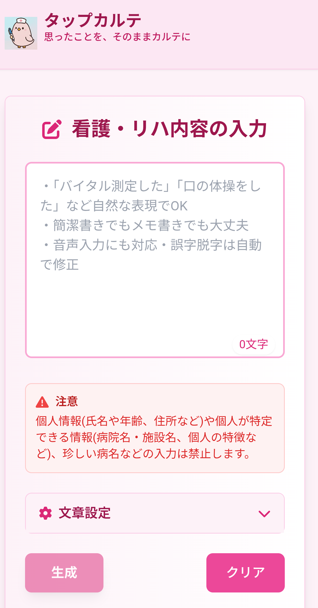
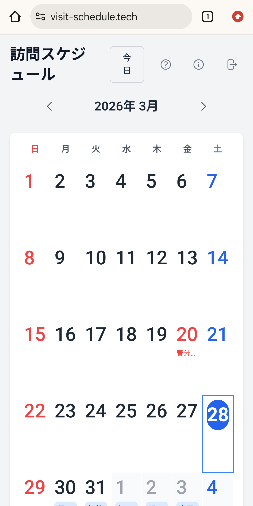
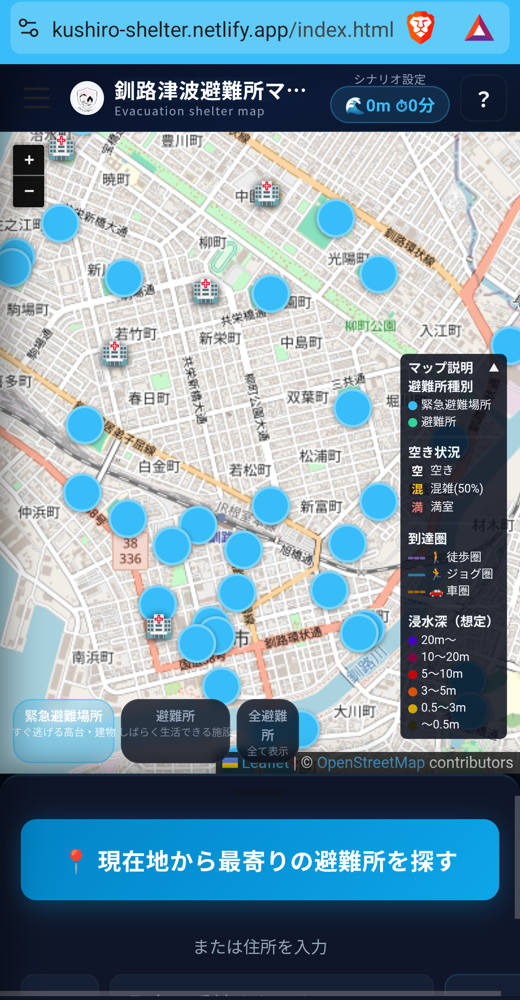

生成AIと共に創り上げた作品の数々
GeminiCLI→Claude Code で構築した公式サイト。HTML/CSS/Python (FastAPI) のマルチページ構成。Netlify でデプロイ。費用0円。

看護師・リハビリ職向け AI 看護記録生成アプリ。自然な文章を入力するだけで専門的な看護記録・医療文書を自動作成。費用6,000円程度。

訪問看護・訪問介護向けのスケジュール管理ウェブアプリ。カレンダー形式で訪問予定を一覧管理できる。費用100円程度。

釧路市の津波浸水シミュレーション×避難所マップ。現在地から最寄りの避難所を瞬時に検索。地域の防災に貢献するAI活用の実例。費用5,000円程度。
勉強会で作成したアプリや、メンバーの制作物を随時掲載していきます。
当ラボでは生成AIを積極的に活用して制作しています
Claude・ChatGPT・Geminiを使い分け、目的に応じた最適なプロンプトで効率的に開発・デザインを行います。
AIのサポートにより、従来の数分の一の時間でプロトタイプを作成。アイデアをすばやく形にできます。
ユーザーフィードバックとAIの提案を組み合わせ、継続的に品質を向上させるアジャイルな開発スタイル。